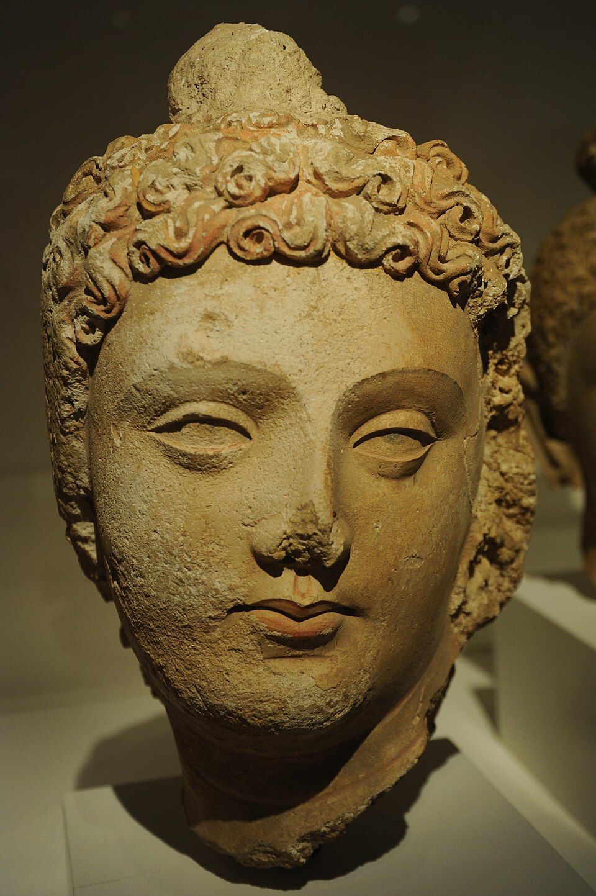
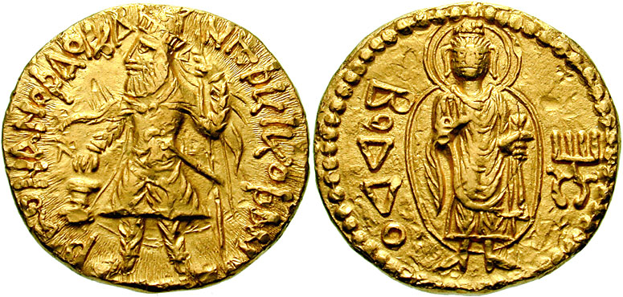

| Dynasty | Period | Region | Key Rulers | Contributions |
|---|---|---|---|---|
| Shungas | 185-73 BCE | North India (Pataliputra 🔶) | Pushyamitra (founder), Agnimitra | Brahminical revival, Bharhut Stupa, Patanjali's Mahabhashya |
| Indo-Greeks | 180-10 BCE | Northwest (Punjab, Afghanistan) | Menander I (Milinda) | Gold coins with portraits, bilingual legends, Milinda Panha |
| Shakas (Western Kshatrapas) | 1st-4th c. CE | West (Gujarat, Malwa, Ujjain) | Rudradaman I | Junagadh inscription (first long Sanskrit inscription, 150 CE) |
| Kushanas | 1st-3rd c. CE | Northwest + North (Peshawar, Mathura) | Kanishka (c. 78 CE) | Saka Era (78 CE), Fourth Buddhist Council, Gandhara + Mathura art, Silk Route |
| Satavahanas | 1st c. BCE - 3rd c. CE | Deccan (Maharashtra, AP, Telangana) | Gautamiputra Satakarni | Matronymics, lead/potin coins, Amaravati Stupa, Buddhist + Hindu patronage |
| Chedis (Kalinga) | c. 2nd-1st c. BCE | Odisha (Kalinga) | Kharavela | Hathigumpha inscription (Odisha) — records military conquests; patron of Jainism; conquered parts of Bihar (Rajgir, Pataliputra mentioned in inscription) |
| Vakatakas | c. 3rd-5th c. CE | Central India (Deccan, Vidarbha) | Vindhyashakti, Pravarasena | Post-Mauryan → Gupta-era dynasty; alliance with Guptas (Chandragupta II married his son to Vakataka princess Prabhavatigupta); patron of Ajanta Caves |
| Invader | Period | Origin | Key Fact |
|---|---|---|---|
| Indo-Greeks (Bactrians) | c. 180-10 BCE | Bactria (modern Afghanistan) | Menander I (Milinda) — Milinda Panha. First gold coins with portraits. Bilingual legends (Greek + Kharoshthi). |
| Shakas (Scythians) | c. 1st-4th c. CE | Central Asia | Rudradaman I — Junagadh inscription (150 CE, first long Sanskrit). Ruled Gujarat + Malwa. Capital: Ujjain. |
| Kushanas (Yuezhi) | c. 1st-3rd c. CE | Central Asia (Xinjiang) | Kanishka — Saka Era (78 CE), Fourth Buddhist Council (Kashmir), Gandhara art, Silk Route. |
| Feature | Gandhara School | Mathura School |
|---|---|---|
| Location | Peshawar, Taxila (modern Pakistan/Afghanistan) | Mathura (UP, south of Delhi) |
| Patron | Kushanas (Kanishka) | Kushanas (also indigenous) |
| Style | Greco-Roman + Indian (Hellenistic) | Indigenous Indian |
| Buddha features | Wavy hair, muscular body, Greek drapery, sandals | Usnisa (topknot), serene expression, transparent robes |
| Material | Blue-grey schist stone | Red sandstone |
| Other subjects | Buddhist only | Buddhist, Jain, Hindu (all three) |
Test your knowledge. Select the best answer for each question, then click "Check Answers" to see your score and explanations.